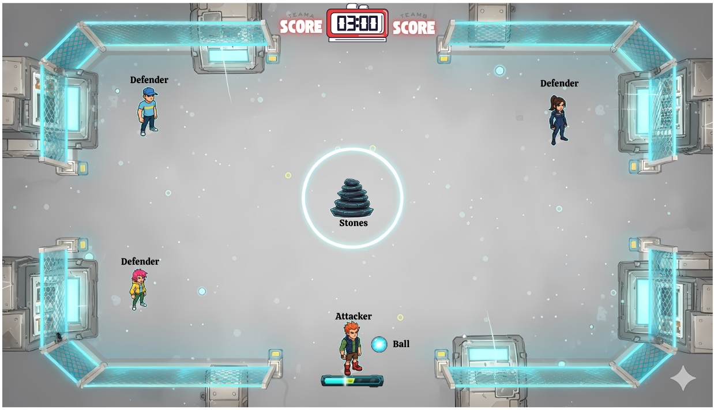

Kivi Board Game (Java)
Java
Java Swing
Git
Game Design
Game Development
AI Logic
UI Design
OOP
Design Patterns
Accessibility
A turn-based dice strategy game built in Java Swing, where players compete on a 7x7 grid over 10 rounds, aiming to match dice patterns to place stones and score points.
TowerEcho (Godot4)
Godot Engine
GDScript
Git
Game Design
Game Development
AI Systems
UI/UX Design
Level Design
Environment
VFX & SFX
State Management
Game Architecture
Object Pooling
A fast-paced 2D tower defense shooter developed in Godot Engine. Players control a mouse-aimed turret to defend their base against randomized enemy waves with unique pathing and escalating difficulty.
TO-DO-LIST-APP (Unreal Engine 5)
Unreal Engine
Blueprints
UMG
Git
UI/UX Design
Software Development
Data Persistence
File I/O
A lightweight task management utility app built in Unreal Engine 5 using UMG. The application provides a simple, intuitive way to organize daily goals with persistent data storage and full task creation and management capabilities.
Pit2 - Game Design Document
Game Design
GDD
Multiplayer
UI/UX Design

Pit2 is a fast-paced, 2D multiplayer arcade sport that reimagines the classic Indian game Lagori (Pitthu) for the digital arena. Two teams of three players battle it out in a clash of precision, reflexes, and teamwork — one side striking to scatter the iconic stack of seven stones, the other racing to rebuild it under pressure.
Zombie Mayhem (Unreal Engine 5)
Unreal Engine
Blueprints
UMG
AI Systems
Game Design
UX Design
VFX & SFX
Project Management
A first-person survival shooter developed solo in Unreal Engine 5 using Blueprints. Features wave-based progression, autonomous zombie AI, responsive combat mechanics, and immersive UI feedback systems.